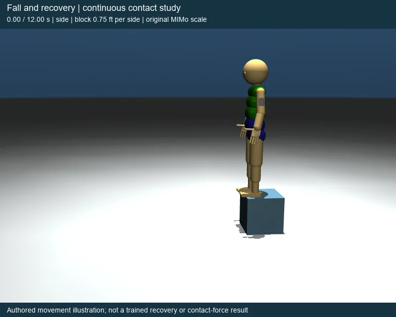
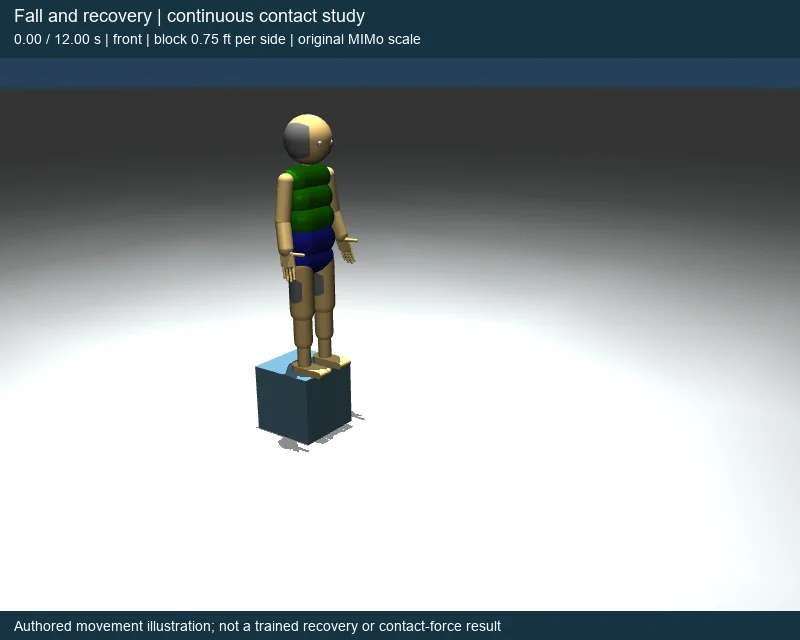
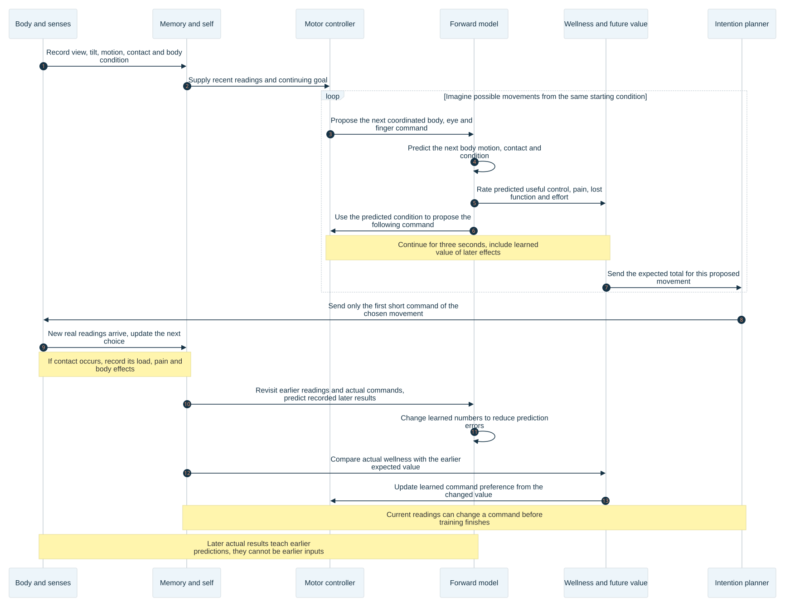
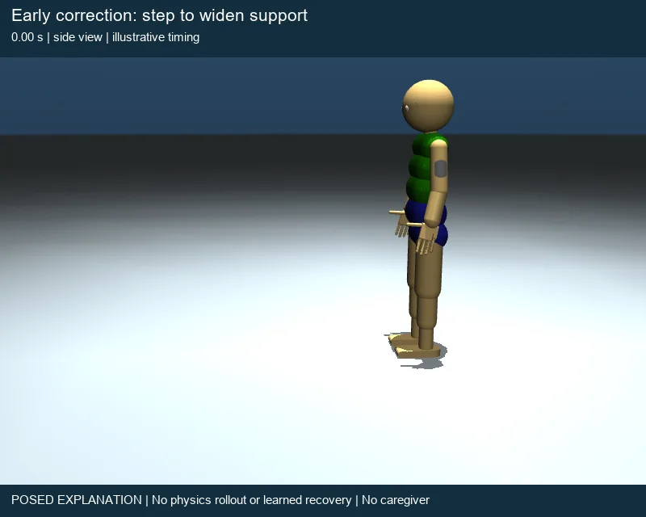
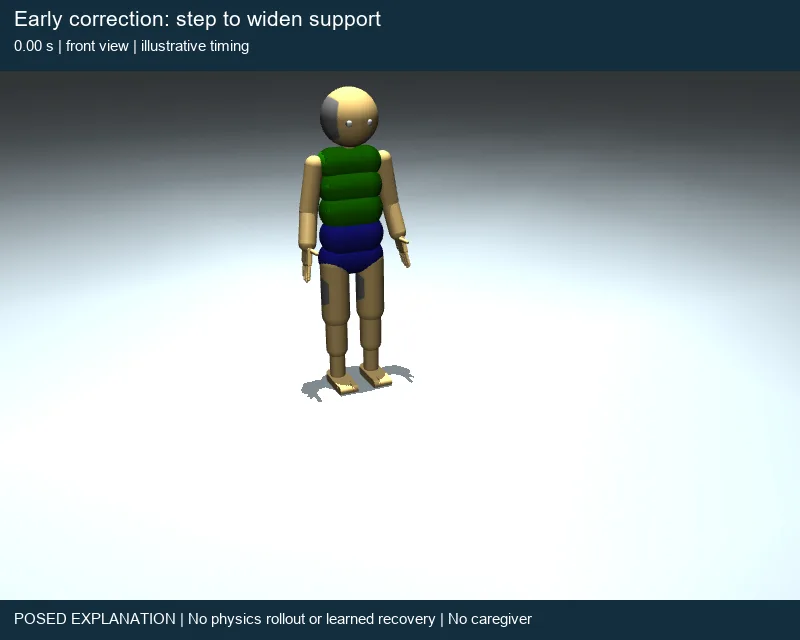

UEMA design • Revised explanation • October 27, 2026
How UEMA could learn to avoid a painful fall—and keep learning to move
MIMo is a simulated infant body. UEMA is the learning program that controls it. The goal is to learn useful movements, such as moving toward a ball and grasping it. That takes practice. Some movements take effort; some can hurt the body. UEMA needs to learn the difference.
This page follows one fall. It explains what the body would report, how a painful result would teach earlier choices, and how the next attempt could improve. The proposed solution uses UEMA’s body model, memory, forward model, wellness, motor controller and intention planner. Each part is explained below.
The pictures were made by posing MIMo in MuJoCo, the program used to draw and simulate its body. They show the movement we are discussing. The forces of this fall and a trained recovery have not been measured.
1 • First, watch the movement we need to explain
MIMo starts on a block that is 9 inches high, wide and deep. It tips forward, reaches the floor, lowers on its hands and knees, brings a foot forward, and stands. Both pictures show the same body at the same time. The side view shows the lowering motion. The front view separates the two arms and legs.


Example: how much pressure detail is available
This meter is a chosen example. It is not damage measured from the pictured fall. A lower bar means that the affected patch of skin reports pressure in larger steps.
The pressure-detail bar is a separate illustration. Changing it does not change the pictured movement or a running model.
Watch the knees near 2 seconds. They meet the floor and stay there while the elbows bend. The hips move around the planted knees. Later, the hips shift back before the hands lift. One foot then comes forward to help the body rise.
| Time in the picture | Body movement | Question for learning |
|---|---|---|
| 0–1.60 seconds | The body tips toward the edge. Arms move forward. | Can an earlier movement keep support under the body? |
| 1.60–1.86 seconds | The body leaves the edge. Hips and knees bend. | Where will the body meet the floor, and how hard? |
| 1.86–3.90 seconds | Hands and knees meet the floor. Elbows bend, then extend. | Which movement reduces the load on the head, hands and knees? |
| 3.90–7.30 seconds | Hips move back. Hands lift. One foot plants. | Can the remaining contacts support the next movement? |
| 7.30–12.00 seconds | The other foot comes forward. The body rises and holds its stance. | Can the body stand with the strength and sensing it has now? |
A body can be upright again while a hand is still sore or less useful. The learning record must keep both facts: the movement succeeded in standing, and some effects of the fall may remain.
How the pictures and times were made
The block is 0.2286 metres per edge. MIMo keeps its original proportions and is about 0.83 metres tall. There are 361 poses, shown at 30 frames per second, from 0 to 12 seconds. These are chosen illustration times, not measured human reaction times. The pose calculation uses gravity for the short flight, but does not solve the forces at impact.
Both knees’ surfaces remain less than 1 millimetre above the floor during the supported lowering. The closest points are beside the knees, rather than farther along the shins. All 722 images were decoded, and the saved poses clear the floor and block. Geometry measurements · Rendering program.
The pressure-detail bar is a separate example of the existing skin model. Its internal quality setting falls to 0.20 at contact and returns toward 1 using a ten-second recovery constant. Neither the drop nor the recovery time was measured from this fall. A quality setting is not a percentage of pain or accuracy.
2 • The parts of UEMA, and what each does
A command is a set of numbers asking the body to move. It describes body-part positions and turns, and how strongly to act. The command path converts those numbers into motor controls. Movement changes the readings that return to UEMA. Useful control means being able to keep and change a relationship, such as holding an object and moving it without dropping it. A learned network is a program whose stored numbers change with experience. Those changes can improve its predictions and choices.
The diagram below maps the proposed complete learning loop. Some connections already exist in code; the work table at the end identifies the connections that still need completion. Arrows mean that one part passes information to the next.
Homeostasis means keeping a body able to function. Here, wellness is UEMA’s numerical rating of useful control and bodily condition. It is not a claim that the program has human feelings. A temporary effort can be worth making if it prevents a worse loss or leads to useful control.
An intention is the outcome being pursued, such as holding an object. It can continue across many commands. The eyes, trunk, legs and fingers may all change during one command interval. They do not have to take turns.
Measure images, joint motion, tilt, contact and available muscle force.
Readings → memory and selfKeep recent readings and an estimate of the body’s condition: sensing, strength and painful load.
Current condition → command and predictionA learned network proposes coordinated body, eye and finger commands from that condition and the current goal.
Proposed commands → imaginationThe forward model predicts the next result of a command. Imagination repeats this to predict a whole movement.
Predicted movement and condition → wellnessUseful control raises the wellness rating. Pain and loss of function lower it. A learned value estimate includes effects that happen later.
Expected result over time → plannerCompare proposed movements. Keep or change the goal, then send the first short command of the chosen movement.
Chosen command → bodyConvert the chosen command into motor controls. The body moves and produces new readings.
New readings → parts 1 and 2 againSave what happened before, the command actually sent, and what followed. Use these records to improve prediction and choice.
Real results → parts 2 through 63 • What a painful fall must teach
Suppose the floor presses hard against a knee. The force carried by the knee is its load. Stretching or twisting of tissue is called strain. Four different records are needed. Combining them into one number would hide information that later movement needs.
What happened?
Where was the contact? How large was the pressure or strain? How long did it last?
How bad was it?
The body’s pain signal makes harmful loading count against the movement. A short sharp event must not disappear inside a long average.
What still works?
Can that knee bear force? Does the nearby skin still report useful pressure detail? These effects can last longer than the sharp pain.
Was it expected?
Compare the predicted result with the actual result. The difference tells the learning process what needs correction.
An expected painful impact must still count as bad. Predicting it accurately removes the surprise. It does not remove the pain or restore the body’s function.
The lesson must include what happened before contact
- Save the approach. Keep the earlier view of the edge, body tilt, foot contact and the commands actually sent. Also keep the later contact and body condition.
- Teach the prediction. Start with the earlier readings. Apply the recorded commands to the forward model, one after another. Compare each predicted result with the later real result. Adjust the network’s learned numbers to reduce those differences.
- Teach the choice. Compare what followed a command with the value predicted for it. If the result was worse than predicted, lower that estimate; if better, raise it. A painful catch can still be better than an uncaught fall. Also keep examples where a different movement preserved function or succeeded without painful loading.
- Use that learning before the next impact. On a similar approach, imagination can predict a painful result before contact. The planner can then prefer a command sequence with a better expected outcome.
This must not teach “never move” or “never put a hand down.” A catch can happen just before pain and still reduce the damage. Comparing attempts that start alike helps separate the earlier mistake from the later useful correction. A single record cannot reveal what every untried movement would have done.
Correcting this movement and learning for next time are different jobs
During a movement, new readings go into the network that is already trained. It can change the next command without waiting for more training. After the result arrives, learning changes the network for later decisions. A body with no relevant experience cannot acquire a reliable recovery just because its first fall produces a large penalty.
The proposed feedback interval is 50 milliseconds: one twentieth of a second. A half-second viewing phase therefore contains ten opportunities to update the command. Imagination looks about three seconds ahead, and learned future value accounts for consequences beyond that window. A twelve-second recovery does not have to fit inside one three-second plan. After each new reading, predict the next three seconds again. The learned future value includes what may happen later. These are design settings; the project still needs to measure whether computation finishes quickly enough.
The sequence diagram below shows the messages between parts. Scroll it sideways to follow the whole width, or open the full diagram.

How a brief event reaches the learning update
Keep the peak pressure, shear, joint strain and event identity at the physics sampling rate. Convert excessive loading into a pain severity from 0 to 1 for that event, using fixed limits checked against this simulated body. Record increases in its severity as they occur, without charging the same peak again at every sample. Continuing painful exposure has a separate duration-based cost. Loss of sensing or strength has its own continuing cost.
Queue the impact record and the preceding movement for prompt training. Direct prediction training can change an earlier forecast of later pain in one update opportunity. Teaching the value of all earlier choices can take further updates. Measure the change in both prediction and actual chosen movement after each allowed update; do not call a queued lesson “learned avoidance.”
4 • What research on people and animals adds—and what it does not
Research supplies useful distinctions. It does not supply a complete recipe for a toddler’s fall, or the right settings for MIMo. The studies below used different tasks and ages. The design conclusions are our engineering inferences from those results.
Children learn from ordinary movement, not only from painful events
A study of infants’ everyday movement found frequent steps and falls, with walking improving as experience increased. It did not show that each fall was painful. For UEMA, this supports learning from varied successful movements and harmless mistakes as well as harmful contacts. A “fall” label alone should not create a severe penalty. Adolph and colleagues, 2012: infant walking observations.
Detecting a harmful event and finding it unpleasant are not the same operation
In an adult experiment, suggestions changed how unpleasant a painful stimulus felt without changing its reported intensity. For this design, keep the physical load, the negative value assigned to it, and the body’s ability to function as separate records. Making pressure readings less detailed is not, by itself, a complete explanation of why a movement should be avoided. Rainville and colleagues, 1997: pain intensity and unpleasantness.
Earlier clues can acquire meaning from later pain
In an adult brain-imaging study, responses during learning about pain matched a model that updates predictions through a sequence of clues. For UEMA, the useful idea is to teach the earlier approach from the later result. The experiment does not prove that one painful fall teaches a child a whole recovery. Seymour and colleagues, 2004: learning predictions of pain.
Relief can teach, without needing a prize for injury
In rats with ongoing pain after surgery, blocking pain signals produced a preference for the place associated with relief and activated reward-related brain pathways. Our design inference is to let removal of a continuing bad state improve the expected future. There is no need to pay a separate bonus for first creating that state. Navratilova and colleagues, 2012: learning from pain relief.
Pleasure and the drive to obtain something can come apart
In rats, major loss of dopamine, a chemical that carries messages between nerve cells, did not remove the usual positive reactions to a sweet taste, even though feeding was impaired. This argues against naming one setting “pleasure” and using it for everything. UEMA should keep a beneficial bodily result separate from how strongly a command is pursued and from how surprising the result was. Berridge and colleagues, 1989: taste reactions and dopamine.
Fast protection is not evidence of learning from that same event
A newborn study measured limb-withdrawal responses to touch and a clinically required small heel prick to collect blood. The responses changed with development and were not always specific to harmful stimulation. These were newborns, not toddlers falling. The useful warning for UEMA is simple: do not confuse a fast existing response with a new ability learned at impact. Cornelissen and colleagues, 2013: infant withdrawal responses.
The toddler example, stated carefully: movement practice provides information about balance and support. A painful result can add a strong reason to avoid a similar outcome. Earlier clues can then guide an earlier response. We should borrow these learning functions—not claim that this animation reproduces a toddler’s nervous system.
5 • Keep the patent’s body consequences; make the learning connection explicit
The patent, US11537850B2, describes virtual interactions changing how sensors work or how a network does its calculations. Its examples include local loss and recovery of sensory resolution. Resolution means the amount of detail a sensor can report. Figure 5 also separates effects on sensors from effects on processing. Read the patent.
That is useful: a painful event can change what the body can do afterward, rather than only changing a score. But a loss of detail alone does not explain avoidance. If blurred readings become easier to predict, a learner rewarded only for prediction accuracy could prefer the blur. The body’s loss of function must also count against that outcome.
| Design decision | What it means for a fall | Why retain it? |
|---|---|---|
| Separate pain from loss of function. | A sharp impact can have a negative value even if the body soon works normally. A damaged body can remain impaired after sharp pain fades. | The two effects have different timing and teach different consequences. |
| Keep the warning readable when ordinary touch becomes coarse. | Proposed change: derive a pain warning before ordinary touch loses detail. Pass only its location, severity, time and event number. The current learning route uses the altered touch readings; this new warning route still needs to be built and checked. | Reducing sensor detail must not erase the event that teaches avoidance. |
| Retain both painful and successful attempts. | Teach the approach, impact and recovery as one connected record. Compare with real attempts that preserved support. | A late helpful catch should not be blamed for an earlier loss of support. |
| Learn relief through a better future. | Unloading a painful knee reduces its continuing cost. Returning to the same healthy state after causing pain earns less than staying healthy. | Recovery can be useful without rewarding repeated injury. |
| Limit each body effect to its cause. | A local skin effect changes that skin region. Fatigue affects the muscles that produced it. Visual blur needs its own reason and evidence. | The patent permits several effects; that does not mean every fall should disable every sense. |
What I would not add: a hand-written “fall → brace → stand” controller, a global learning-rate surge whenever pain occurs, or a rule that every pleasant event improves every sensor. The research does not justify those additions, and they could hide whether movement is actually learned.
Which temporary settings are useful?
A meta-parameter is a setting that changes how another part works. For this body, useful examples are the size of pressure-reading steps and the force a muscle can produce. These are different from the learned network weights—the stored numbers changed by training.
| Setting or signal | Current source evidence | Decision |
|---|---|---|
| Local pressure detail | The existing BodyFunction and virtual-skin code can round local readings to larger steps and later restore detail. The modulate setting sends those altered readings to learning. | Reuse this route. Check its load and recovery settings on the simulated body. |
| Available muscle force | The fatigue code can reduce motor force and restore it with recovery. | Keep fatigue distinct from impact injury. Direct impact-related weakness needs a separately defined body model. |
| Pain and pleasant-touch signals | Existing contact and memory routes already carry such signals. | Reconcile their exact meaning with the new whole-movement rating. Do not add a second unrelated pain producer. |
| Importance of a saved lesson | The proposed learning design gives rare harmful events prompt review while retaining ordinary experience. | Change which records are studied, without turning down the whole network’s ability to learn. |
| Vision blur, lasting injury or damaged balance sensing | The inspected routes do not establish these as effects of an impact. | Do not claim them as built. Add only a cause-specific effect that changes a needed learning comparison. |
The hidden full-detail pressure record must stay hidden from the movement chooser. It is for checking results. The proposed warning would be a separate, limited body signal, not a way to reveal all hidden measurements. Its meaning must agree with the existing pain signal.
These are code capabilities, not a report that their switches are enabled in a live run. The inspected source is recorded in the body-function and prediction review.
6 • What makes one whole movement better than another?
The proposed rating adds up what happens over time. Useful control adds to it. Pain, reduced sensing or strength, and effort subtract from it. It includes a separate immediate cost for a sharp pain event. The goal is not to keep every moment comfortable.
For example, shifting weight can take effort now but make a reach possible. Lowering the body can be better than trying to stay upright and hitting the floor harder. Rest can be better when it restores needed strength. These choices must come from predicted consequences, not from rewards attached to a named pose.
Useful control means a relationship the body can maintain and change: for example, holding an object while moving it in more than one direction. The proposed measurement compares real attempts with holding still and with changed command order. It must not pay merely for shaking, adding labels to an object, or dropping and regrasping it.
Pleasure has a limited role here. Keep existing beneficial body signals where their cause is defined. Do not assume that a pleasant signal, better sensing, a surprise, and a useful ability are interchangeable. Neuroscience does not choose the project’s goal for us. Valuing useful retained control remains a UEMA design choice.
Exact rating, without invented example measurements
For an actual interval of length Δt seconds, use the proposed rating:
r = Δt × (C − D − ηE) − λ × ΣΔA
- C: retained control
- A score from 0 to 1 backed by matched physical attempts. Zero means no supported control credit; one is the defined maximum. A learned estimator predicts this score from available readings. It cannot rewrite its own training labels.
- D: continuing bodily cost
- Add two fixed, positive costs: (1) loss of sensory or motor function, including temporary loss of pressure detail, fatigue and lasting impairment; (2) continuing painful exposure. Each family spans 0 to 1 under its declared body scale; their sum spans 0 to 2. Lasting injury contributes through its loss of function and how long that loss lasts, rather than a second copy of the same loss. Preserve each affected region so a new injury cannot be hidden by a larger existing one. This explicitly revises the earlier three-family proposal. A physical injury with delayed effects needs a prediction of those later effects; the illustration does not provide such an injury model.
- E: effort
- Measured mechanical power divided by a fixed reference, clipped to 0–1. η sets its weight. Command strength alone is not measured work.
- ΔA: new severity of a sharp pain event
- For each physical event, A stores the greatest qualified severity reached so far, from 0 to 1. Charge only an increase in A. Store event identity and the previous peak so that one impact is not charged again at every sample or after a restart. Continuing pain still contributes to D.
- λ: pain weight
- Choose a fixed value from matched recorded movements before training. Compare severe impacts with alternatives that give a similar useful result. Verify that a small gain in control does not pay for the declared severe event, while ordinary effort can still be worthwhile. No operating value is established by the animation.
Predict the sum of r through the movement, giving later consequences a declared decreasing weight. Add learned future value beyond the three-second prediction. The earlier proposed ten-second discount constant and effort weight 0.05 are comparison settings, not biological facts or qualified operating values.
Keep three checks explicit: expected pain still reduces r; a sharp event without lasting damage still reduces r; and injury followed by recovery scores below an otherwise matched healthy path. No separate positive payment is added when an event ends. This is how relief can improve a choice without making injury profitable.
The existing raw motor wellness score and remembered-goal ranking are not silently redefined as r. The new consumer needs recorded signal versions and units. The previous detailed design retains the original control measurement and update equations; this revision clarifies their meaning and adds the research-driven checks above.
7 • Learn from the fall without showing the answer early
The forward model predicts what follows a command. During training, it must make that prediction from information available before the result. Otherwise, it could seem accurate by reading the answer.
Input: the view, tilt, foot pressure and commands already available.
Predict: later contact and body condition.
Record the actual contact and body condition.
Use them to check and improve the earlier prediction.
Attention is a network operation that combines information from its inputs. Cross-modal attention combines senses, such as sight and touch. A causal mask blocks readings that had not arrived when a prediction was made. It should still allow senses available at the same time to help each other.
The inspected code uses the newest prediction from a history that has already happened. Its missing mask does not, by itself, show that this current route sees the future. The problem arises if training puts a whole recorded movement into one stored list of readings and scores predictions for earlier times. An unmasked connection could then pass the later impact backward to an earlier prediction.
| Prediction being made | Before-contact readings | After-contact readings |
|---|---|---|
| Before contact | Yes, if received already | No |
| After contact | Yes | Yes, if received already |
The check is concrete. Make two copies of a saved movement. Keep the earlier readings, command, learned weights and random choices the same. Change only the later impact reading. Recompute the earlier prediction: it must stay the same. Its error against the changed answer may differ. After a learning update, a new prediction may improve.
Keep every route consistent with this rule
Preserve the current history-only route as a reference. For training many times together, block later-to-earlier information in every layer, including the bridge between senses. Keep earlier-to-later paths open. Allow all available senses at the same time, regardless of their order in an array. Check stored memories, body-state estimates, reused intermediate results and normalization too; none may quietly carry a later answer into an earlier decision.
Save both when a reading was taken and when it arrived. A late camera image cannot help a decision already made. Apply each command only to the transition it could cause. A later command must not change the predicted outcome of an earlier time, before that command could act. When teaching from a saved sequence, the model may be given the recorded commands between the starting point and the result. But when judging a real decision, it must choose those future commands itself from readings available as the movement unfolds. Supplying commands chosen with later knowledge would make the test easier than the actual task. Imagination may generate future readings; those must remain predictions, not actual future answers copied from the recording.
A new mask can change an existing network’s behavior. Preserve learned weights, memories, all worlds and training state; compare the changed route with the preserved one before adoption. Then measure prediction during freely generated sequences and actual useful movement, not just error on a recording. Inspected attention paths.
8 • Check more than one kind of movement
A design that avoids every downward movement could prevent useful lowering. A design that rewards any hand contact could accept a bad fingertip impact. The four short illustrations below keep those cases separate. Each holds its final pose for inspection; the frozen pose does not show that real forces would hold it there.


Early step: can a learned response preserve support? No timely correction: does the earlier missed response receive a useful lesson? Controlled lowering: can ordinary effort remain worthwhile? Late fingertip approach: does the model account for loads on fingers and wrists, rather than only the head’s distance from the floor?
9 • What exists, what is missing, and what would settle it
The overseer writes and reviews this design. The builder is the coordinator who executes authorized model changes and training. This revision changes the explanation and proposed design checks. Model implementation and training remain paused by the operator’s instruction.
| Work | Present state | Next action and evidence required |
|---|---|---|
| Make the fall understandable | The two-view animation is available. The floating knees and backward landing snap were corrected. | Use the corrected image set here. Keep its geometry record separate from future force measurements. |
| Connect body consequences to whole-movement wellness | Local skin effects, fatigue, and pain-related signals exist in source. The complete rating proposed here still needs checks against actual simulated movements. | On operational resumption, the builder traces each signal from where it is made to prediction, learning and command choice. Define and check the limited pain-warning input proposed in Section 5; keep the hidden pressure record out of command choice. The overseer checks the exact units, modes and saved-state comparison. |
| Teach earlier choices from later pain | The design says what to save and how to teach the sequence. A test has not yet shown how quickly choices improve. | Use the existing saved-state runner to compare forecasts and real choices before and after a permitted update. Include useful catches, harmless mistakes and successful movement. |
| Predict a whole motion without later answers | The present newest-history route is identified. Training many moments together needs the information-blocking rule and checks described above. | Preserve the reference state, check information timing, then compare full movement predictions and retained abilities. |
| Show useful learning | A repeatable learned fall avoidance, recovery and move–reach–grasp sequence is not measured by these illustrations. | Record attempts from matched starting states: starting body, predicted motion, actual motion, contacts, function and task outcome. Repeat after reload and in changed scenes. Report every failed attempt and intervention. |
The specific next implementation step is to trace the existing pain and body-function signals into the proposed whole-movement learning route. It waits for explicit operational resumption. No new global blur, emergency controller or training launch is authorized by this document.
10 • Sources and review
This revision follows Writing a page the operator can read: introduce the body and task, show the event, explain the parts, follow the mechanism, then give the state of the work. The earlier wellness report is preserved.
Research links appear beside the claims they support. Human, newborn and rat results are labelled separately. Proposed UEMA changes are design inferences. The research is used to distinguish functions; it is not evidence that this model has human pain or pleasure.
Independent reviews found and corrected problems with late definitions, the timing explanation, the pain-warning input, temporary loss of touch detail, and how earlier choices receive a lesson. The corrected prose and design passed re-review. Desktop and phone checks cover layout, links, both camera views, playback and sliders; the saved browser receipt gives the exact results. Technical details remain available in expandable sections.
Research and design review · Independent reader’s findings · Author’s sentence review · Browser checks · Current work record.